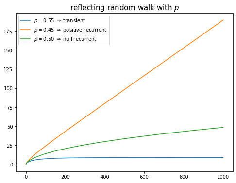

12wk-1: 마코프체인 (10)
2023-05-18
강의영상
youtube: https://youtube.com/playlist?list=PLQqh36zP38-w6PeAXdc4YcGTb7M_67Wog
imports
지난시간
- 수학: 어떠한 집합 \(E\)에서 equivalence relation \(\sim\)을 정의할 수 있다면, 집합 \(E\)의 모든 원소는 \(\sim\)를 기준으로 분해할 수 있다. 즉 아래를 만족하는 \(E_1,E_2,E_3,\dots\) 이 존재한다.
\[E = \uplus_{k=1}^{\infty} E_k\]
단 여기에서 \(E_1,E_2,E_3,\dots\) 는 서로소이다.
- 통계: 확률변수열 \(\{X_t\}\)가 HMC라고 하고, \(E\)를 \(\{X_t\}\)가 정의되는 상태공간이라고 하자. 기호 \(\leftrightarrow\)는 \(E\)에서 정의된 euivalence relation이 된다. 따라서 집합 \(E\)의 원소는 \(\leftrightarrow\)를 기준으로 아래와 같이 나눌 수 있다.
\[E = \uplus_{k=1}^{\infty} E_k\]
단 여기에서 \(E_1,E_2,E_3,\dots\) 는 서로소이다.
- 의미(\(\star\star\star\))
- IRR 하지 않은 마코프체인은 IRR 한 마코프체인으로 분해하여 생각할 수 있다.
- 앞으로 마코프체인에 대한 성질을 연구할때 IRR 은 그냥 가정해도 무방하다.
- 예시1: 아래와 같은 전이행렬을 고려하자.
해석1: 모든 분포가 정상분포라고 해석
해석2: 전체마코프체인을 쪼개서 (1) 상태0에만 머무는 마코프체인, (2) 상태1에만 머무는 마코프체인으로 나누어 생각하고 각각에 대한 정상분포가 1이라고 해석.
- 예시2: 아래와 같은 전이행렬을 고려하자.
array([[1, 0, 0, 0],
[0, 1, 0, 0],
[0, 0, 0, 1],
[0, 0, 1, 0]])해석: 전체마코프체인을 쪼개서 (1) 상태0에만 머무는 마코프체인, (2) 상태1에만 머무는 마코프체인 (3) 상태 2,3을 셔플하는 마코프체인으로 생각하자. 즉 상태공간을 아래와 같이 분리하자.
\[E = E_1 \uplus E_2 \uplus E_3 = \{0\} \uplus \{1\} \uplus \{2,3\}\]
각 상태공간에 대응하는 마코프체인의 정상분포를 \({\boldsymbol \pi}_1^\top,{\boldsymbol \pi}_2^\top,{\boldsymbol \pi}_3^\top\) 이라고 하자. 전체 정상분포 \({\boldsymbol \pi}\)는 아래를 만족하는 어떠한 분포라도 무관하다.
\[{\boldsymbol \pi} = a{\boldsymbol \pi}_1+b{\boldsymbol \pi}_2+c{\boldsymbol \pi}_3.\]
단, 여기에서 \(a+b+c=1\) 이고 \(a,b,c\)는 모두 양수이다.
예비학습
나그네
- 나그네 (박목월)
강나루 건너서
밀밭 길을
구름에 달 가듯이
가는 나그네
길은 외줄기
南道 삼백리
술 익는 마을마다
타는 저녁놀
구름에 달 가듯이
가는 나그네- 나그네
- 정착 X
- 모든 장소에 일시적(transient)으로만 머뭄
- 다시 돌아올 수는 있는데 금방 다시 감.
- 편의상 아래와 같이 생각하자.
- \(E\): 마을의 집합
- \(X_t=i\): \(t\)시점에 나그네가 마을 \(i\)에 머무는 event
급수의 수렴
- \(a_n \to 0\) 이라고 해서 \(\lim_{n\to\infty} S_n <\infty\) 인건 아니다.
- 예시1: \(a_n=\frac{1}{2^n}\), 수렴하는 경우
- 예시2: \(a_n = \frac{1}{n}\), 수렴안하는 경우
nature
예제1: 오른쪽으로만 갈래
확률변수열 \(\{X_t\}\)가 HMC라고 하고, 그 transition matrix \({\bf P}\) (혹은 그 비슷한 것) 가 아래와 같다고 하자.
\[{\bf P} = \begin{bmatrix} 0 & 1 & 0 & 0 & 0 & \dots \\ 0 & 0 & 1 & 0 & 0 & \dots \\ 0 & 0 & 0 & 1 & 0 & \dots \\ 0 & 0 & 0 & 0 & 1 & \dots \\ \dots & \dots & \dots & \dots & \dots & \dots \end{bmatrix}\]
- 체크: 이 예제의 마코프체인은 IRR 하지 않다.
- 나이스케이스: \(\bar{\boldsymbol \pi}^\top \overset{T \to \infty}{\longrightarrow} {\bf p}_{\star}^\top = {\boldsymbol \pi}^\top\)
- 이 예제는 나이스하지 않음 왜? IRR이 아니라서?
- IRR이 아니라서 나이스하지 않다는 것은 핑계임.
- 오른쪽으로 갈 확률을 0.99로 수정한다면 IRR 마코프체인이 된다. 그렇지만 이게 나이스하게 바뀔 것 같지는 않음.
- 나이스하지 않은 본질적인 이유
- 상태 \(i\)에 일시적(transient)으로 머무는 느낌. 거의 나그네 수준임.
- \(\bar{\boldsymbol \pi}^\top \overset{T \to \infty}{\longrightarrow} {\bf p}_{\star}^\top = {\boldsymbol \pi}^\top\) 이와 같은 논리전개를 쓰려면 일단 \(\{X_t\}\)가 특정상태를 무한번 방문해야 가능
- FINITE case
- IRR은 가정할 수 있음.
- IRR을 가정한다면, 모든 마을에 대해서 나그네가 반복적으로 돌아오는 느낌이 있음.
- 깨달음.
- FINITE 인 경우는 IRR 이기만 하면 “반복적으로 마을방문” 이 보장되었다.
- 그런데 INFINITE 한 경우는 IRR 이어도 “반복적으로 마을방문” 이 보장되지 않는다.
IRR 조건이 엄청 대단한 조건인줄 알았는데, 사실 그런게 아니고 (수틀리면 그냥 IRR 이라고 가정해도 무방한) 실제로 대단한 조건은 숨어있는 “반복적으로 마을방문” 이라는 조건임.
- 가짜정의: HMC \(\{X_t\}\)가 (1) IRR (2) PR (3) AP 조건을 만족한다면 \(\{X_t\}\)를 에르고딕 마코프체인이라고 부른다. 여기에서 PR은 positive recurrent의 약자이며 “반복적으로 마을을 방문한다”의 의미를 가지고 있다.
Reccurent, Transient
- 대안정의: \(\{X_t\}\)가 상태공간 \(E\)에서 정의된 HMC 라고 하자. 만약에 상태 \(i \in E\) 가 아래의 식을 만족한다면
\[\sum_{t=0}^{\infty} p_{ii}^{(t)}= \infty\]
\(i\)는 recurrent 하다고 표현하고, 그렇지 않으면 \(i\)는 transient 하다고 표현한다.
예제2: reflecting random walk
확률변수열 \(\{X_t\}\)가 HMC라고 하고, 그 transition matrix \({\bf P}\) (혹은 그 비슷한 것) 가 아래와 같다고 하자.
\[{\bf P} = \begin{bmatrix} 1-p & p & 0 & 0 & 0 & \dots \\ 1-p & 0 & p & 0 & 0 & \dots \\ 0 & 1-p & 0 & p & 0 & \dots \\ 0 & 0 & 1-p & 0 & p & \dots \\ \dots & \dots & \dots & \dots & \dots & \dots \end{bmatrix}\]
- 체크: 이 마코프체인은 IRR하다.
- case1: \(p=0.99\) 라고 하자.
p=0.99
P1 = np.array([[i-j == 1 for i in range(1000)] for j in range(1000)])*p
P2 = np.array([[j-i == 1 for i in range(1000)] for j in range(1000)])*(1-p)
P = P1+P2
P[0,0]= 1-p
Parray([[0.01, 0.99, 0. , ..., 0. , 0. , 0. ],
[0.01, 0. , 0.99, ..., 0. , 0. , 0. ],
[0. , 0.01, 0. , ..., 0. , 0. , 0. ],
...,
[0. , 0. , 0. , ..., 0. , 0.99, 0. ],
[0. , 0. , 0. , ..., 0.01, 0. , 0.99],
[0. , 0. , 0. , ..., 0. , 0.01, 0. ]])array([[0., 0., 0., ..., 0., 0., 0.],
[0., 0., 0., ..., 0., 0., 0.],
[0., 0., 0., ..., 0., 0., 0.],
...,
[0., 0., 0., ..., 0., 0., 0.],
[0., 0., 0., ..., 0., 0., 0.],
[0., 0., 0., ..., 0., 0., 0.]])array([[0., 0., 0., ..., 0., 0., 0.],
[0., 0., 0., ..., 0., 0., 0.],
[0., 0., 0., ..., 0., 0., 0.],
...,
[0., 0., 0., ..., 0., 0., 0.],
[0., 0., 0., ..., 0., 0., 0.],
[0., 0., 0., ..., 0., 0., 0.]])관찰결과
- \(p_{00}^{(t)} \to 0\).
- \(p_{00}^{(t)} \to 0\) 이라고 해서 \(\sum_{t=0}^{\infty} p_{00}^{(t)} < \infty\) 이라고 주장할 순 없음. \(\sum_{t=0}^{\infty} p_{00}^{(t)} = \infty\) 역시 주장할 수 없음.
- \(p_{00}^{(t)}\)이 0으로 수렴하는 속도가 매우 빠르다면 \(\sum_{t=0}^{\infty} p_{00}^{(t)} < \infty\) 일 것이고 그렇지 않다면 \(\sum_{t=0}^{\infty} p_{00}^{(t)} = \infty\) 일 것임.
- 이 경우는 \(p_{00}^{(t)}\)이 빠르게 0으로 수렴하는듯 보이므로 왠지 \(\sum_{t=0}^{\infty} p_{00}^{(t)} < \infty\) 일 것으로 예상가능
- 상태0은 transient 인 듯 하다. (확신 X)
- case2: \(p=0.1\) 이라고 하자.
p=0.1
P1 = np.array([[i-j == 1 for i in range(1000)] for j in range(1000)])*p
P2 = np.array([[j-i == 1 for i in range(1000)] for j in range(1000)])*(1-p)
P = P1+P2
P[0,0]= 1-p
Parray([[0.9, 0.1, 0. , ..., 0. , 0. , 0. ],
[0.9, 0. , 0.1, ..., 0. , 0. , 0. ],
[0. , 0.9, 0. , ..., 0. , 0. , 0. ],
...,
[0. , 0. , 0. , ..., 0. , 0.1, 0. ],
[0. , 0. , 0. , ..., 0.9, 0. , 0.1],
[0. , 0. , 0. , ..., 0. , 0.9, 0. ]])array([[0.88889, 0.09877, 0.01097, ..., 0. , 0. , 0. ],
[0.88889, 0.09877, 0.01097, ..., 0. , 0. , 0. ],
[0.88889, 0.09877, 0.01097, ..., 0. , 0. , 0. ],
...,
[0. , 0. , 0. , ..., 0. , 0. , 0. ],
[0. , 0. , 0. , ..., 0. , 0. , 0. ],
[0. , 0. , 0. , ..., 0. , 0. , 0. ]])array([[0.88889, 0.09877, 0.01097, ..., 0. , 0. , 0. ],
[0.88889, 0.09877, 0.01097, ..., 0. , 0. , 0. ],
[0.88889, 0.09877, 0.01097, ..., 0. , 0. , 0. ],
...,
[0. , 0. , 0. , ..., 0. , 0. , 0. ],
[0. , 0. , 0. , ..., 0. , 0. , 0. ],
[0. , 0. , 0. , ..., 0. , 0. , 0. ]])관찰결과
- \(p_{00}^{(t)} \to 0.88889\).
- \(\sum_{t=0}^{\infty} p_{00}^{(t)} = \infty\)
- 따라서 상태0은 recurrent!
\(p_{00}^{(t)} \to 0.88889\) 이므로 \(\sum_{t=0}^{\infty} p_{00}^{(t)} = \infty\) 이다. 따라서 상태 0은 recurrent!
- case3: \(p=0.5\) 이라고 하자.
p=0.5
P1 = np.array([[i-j == 1 for i in range(1000)] for j in range(1000)])*p
P2 = np.array([[j-i == 1 for i in range(1000)] for j in range(1000)])*(1-p)
P = P1+P2
P[0,0]= 1-p
Parray([[0.5, 0.5, 0. , ..., 0. , 0. , 0. ],
[0.5, 0. , 0.5, ..., 0. , 0. , 0. ],
[0. , 0.5, 0. , ..., 0. , 0. , 0. ],
...,
[0. , 0. , 0. , ..., 0. , 0.5, 0. ],
[0. , 0. , 0. , ..., 0.5, 0. , 0.5],
[0. , 0. , 0. , ..., 0. , 0.5, 0. ]])array([[0.025, 0.025, 0.025, ..., 0. , 0. , 0. ],
[0.025, 0.025, 0.025, ..., 0. , 0. , 0. ],
[0.025, 0.025, 0.025, ..., 0. , 0. , 0. ],
...,
[0. , 0. , 0. , ..., 0. , 0. , 0. ],
[0. , 0. , 0. , ..., 0. , 0. , 0. ],
[0. , 0. , 0. , ..., 0. , 0. , 0. ]])array([[0.003, 0.003, 0.003, ..., 0. , 0. , 0. ],
[0.003, 0.003, 0.003, ..., 0. , 0. , 0. ],
[0.003, 0.003, 0.003, ..., 0. , 0. , 0. ],
...,
[0. , 0. , 0. , ..., 0. , 0. , 0. ],
[0. , 0. , 0. , ..., 0. , 0. , 0. ],
[0. , 0. , 0. , ..., 0. , 0. , 0. ]])array([[0., 0., 0., ..., 0., 0., 0.],
[0., 0., 0., ..., 0., 0., 0.],
[0., 0., 0., ..., 0., 0., 0.],
...,
[0., 0., 0., ..., 0., 0., 0.],
[0., 0., 0., ..., 0., 0., 0.],
[0., 0., 0., ..., 0., 0., 0.]])관찰결과
- \(p_{00}^{(t)} \to 0\).
- 그런데 엄청 천천히 0으로 수렴함.
- \(p_{00}^{(t)}\)이 0으로 수렴하는 속도가 매우 빠르다면 \(\sum_{t=0}^{\infty} p_{00}^{(t)} < \infty\) 일 것이고 그렇지 않다면 \(\sum_{t=0}^{\infty} p_{00}^{(t)} = \infty\) 일 것임.
- 이 경우는 왠지 \(\sum_{t=0}^{\infty} p_{00}^{(t)} = \infty\) 일 것 같음.
- 그래서 상태 0은 recurrent 인 것 같음.
- 실제로 그런지 실험해볼까?
확인: \(\sum_{t=0}^{\infty}p_{00}^{(t)}=\infty\) 임을 프로그래밍을 이용하여 근사적으로 체크해보자.
Pstar = P.copy()
pT = list()
pT.append(Pstar[0,0])
T = 10000
for t in range(T):
Pstar = Pstar@P
pT.append(Pstar[0,0])
np.array(pT).cumsum()array([ 0.5 , 1. , 1.375 , ..., 157.58090143,
157.58888008, 157.59685793])여기에서
pT= \([p_{00}^{(0)},p_{00}^{(1)},\dots,p_{00}^{(T)}]\)np.array(pT).cumsum()= \([\sum_{t=0}^{0} p_{00}^{(t)},\sum_{t=0}^{1} p_{00}^{(t)},\dots,\sum_{t=0}^{T} p_{00}^{(t)}]\)
이다. 마지막의 np.array(pT).cumsum()을 시각화하면 아래와 같다.
그래프를 보니 발산할 것 같음
- 결론: 계산해보면 (이론적으로든, 시뮬레이션을 이용하든) 이 예제의 경우 아래와 같이 됨을 알 수 있다.
- 경우1: \(p>1/2\) \(\Rightarrow\) \(\sum_{t=0}^{\infty} p_{00}^{(t)}<\infty\). // state 0 is transient
- 경우2: \(p<1/2\) \(\Rightarrow\) \(\sum_{t=0}^{\infty}p_{00}^{(t)}=\infty\) with \(p_{00}^{(t)} \rightarrow c\), \(c>0\). // state 0 is positive recurrent
- 경우3: \(p=1/2\) \(\Rightarrow\) \(\sum_{t=0}^{\infty} p_{00}^{(t)}=\infty\) with \(p_{00}^{(t)} \rightarrow 0\). // state 0 is null recurrent
- \(p=0.45, p=0.5, p=0.55\) 일 경우 \(\sum_{t=0}^{\infty}p_{00}^{(t)}\)의 값을 시각화
def calculate_pT(p):
P1 = np.array([[i-j == 1 for i in range(1000)] for j in range(1000)])*p
P2 = np.array([[j-i == 1 for i in range(1000)] for j in range(1000)])*(1-p)
P = P1+P2
P[0,0]= 1-p
Pstar = P.copy()
pT = list()
pT.append(Pstar[0,0])
for t in range(1000):
Pstar = Pstar@P
pT.append(Pstar[0,0])
return np.array(pT)fig = plt.figure(figsize=(8,6))
plt.plot(case1.cumsum(),label=r'$p=0.55$ $\Rightarrow$ transient', color='C0')
plt.plot(case2.cumsum(),label=r'$p=0.45$ $\Rightarrow$ positive recurrent', color='C1')
plt.plot(case3.cumsum(),label=r'$p=0.50$ $\Rightarrow$ null recurrent', color='C2')
plt.title('reflecting random walk with $p$',size=15)
plt.legend()<matplotlib.legend.Legend at 0x7fa316ab5e50>